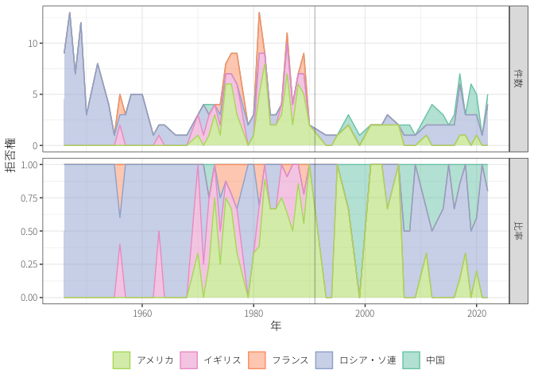
国際制度と平和
国際公共政策学
はじめに
軍事力（それに基づく抑止力）は万能の薬ではない。
\(\leadsto\)それ以外の戦争を回避する、平和を促進する要因の模索
- 国際制度：国際的な武力行使の違法化とその違反に対する制裁、軍備の管理や縮小
- 民主主義：民主的な政治体制の国による戦争の回避
- 経済的相互依存：国家間の経済交流による平和の促進
リベラルな平和、カント的平和(Oneal と Russet 1997; Oneal と Russett 1999)1、リベラル国際秩序 (liberal international order: ILO) (Ikenberry 2009, 2018)などと呼ばれる。
1 カントの「永遠平和のために」がこうした思想の潮流とする見方のため。
多くの国内社会でそうであるように、ルール（制度）で暴力を止める。
- 戦争（武力行使）の違法化
- 集団的安全保障
- 軍縮・不拡散
1 平和のルール
1.1 戦争の違法化
1.1.1 戦間期
第1次世界大戦\(\leadsto\)軍備拡大や同盟による平和の維持には限界
\(\leadsto\)戦争を行う権利を制限するルール (jus ad bellum) によって平和を維持しようとする動き(山影 2012, 第3章)
ウッドロー・ウィルソン米大統領の提案により国際連盟 (the League of Nations) が設立
\(\leadsto\)国際連盟規約：加盟国への戦争は加盟国全体の問題である。
国際連盟規約 第11条
Any war or threat of war, whether immediately affecting any of the Members of the League or not, is hereby declared a matter of concern to the whole League, and the League shall take any action that may be deemed wise and effectual to safeguard the peace of nations. In case any such emergency should arise the Secretary General shall on the request of any Member of the League forthwith summon a meeting of the Council.
国際連盟規約 第16条
Should any Member of the League resort to war in disregard of its covenants under Articles 12, 13 or 15, it shall ipso facto be deemed to have committed an act of war against all other Members of the League, which hereby undertake immediately to subject it to the severance of all trade or financial relations, the prohibition of all intercourse between their nationals and the nationals of the covenant-breaking State, and the prevention of all financial, commercial or personal intercourse between the nationals of the covenant-breaking State and the nationals of any other State, whether a Member of the League or not.
\(\leadsto\)不戦条約（ケロッグ＝ブリアン条約）：戦争の放棄に各国が合意（1928年）
不戦条約第1条
The High Contracting Parties solemly declare in the names of their respective peoples that they condemn recourse to war for the solution of international controversies, and renounce it, as an instrument of national policy in their relations with one another.
1.1.2 第2次世界大戦後
国際連盟や不戦条約では第2次世界大戦を防止することはできず。
\(\leadsto\)戦後に設立された国際連合 (the United Nations)：武力行使禁止原則が確立
国連憲章 第2条3項
すべての加盟国は、その国際紛争を平和的手段によって国際の平和及び安全並びに正義を危くしないように解決しなければならない。
国連憲章 第2条4項
すべての加盟国は、その国際関係において、武力による威嚇又は武力の行使を、いかなる国の領土保全又は政治的独立に対するものも、また、国際連合の目的と両立しない他のいかなる方法によるものも慎まなければならない。
- 戦争を禁止した国際連盟規約とは異なり、武力による威嚇および武力行使 (the threat or use of force) を禁止
- 武力行使禁止原則は慣習国際法（ニカラグア事件ICJ判決、1986年）
自衛権 (self-defense) の行使としての武力行使は例外として認められている。
国連憲章 第51条
この憲章のいかなる規定も、国際連合加盟国に対して武力攻撃が発生した場合には、安全保障理事会が国際の平和及び安全の維持に必要な措置をとるまでの間、個別的又は集団的自衛の固有の権利を害するものではない。
- 国際法上、個別的自衛権と集団的自衛権の合法性は区別されていない。
1.2 集団安全保障
武力行使を国際法上、禁止したとしても、それだけでは意味はない。
\(\leadsto\)集団的安全保障 (collective security) 2の発明
2 集団的自衛権とは似て非なるものなので、要注意。
- 集団的安全保障：武力行使禁止原則に反した国に対して、他の全ての加盟国が制裁を加えることで、それを抑止する。
事実上、全ての加盟国で防衛同盟を結んでいることになる。
- 同盟では敵が同盟の外部にいることが前提
- 集団安全保障では仮想敵が組織内部に存在することを前提
\(\leadsto\)できる限り多くの国家が参加する普遍的 (universal) 制度であるのが望ましい。
1.2.1 国連安全保障理事会
安全保障理事会 (Security Council: SC)：国際連合において、集団安全保障を担う機関
国連憲章 第24条1項
国際連合の迅速且つ有効な行動を確保するために、国際連合加盟国は、国際の平和及び安全の維持に関する主要な責任を安全保障理事会に負わせるものとし、且つ、安全保障理事会がこの責任に基く義務を果すに当って加盟国に代って行動することに同意する。
\(\leadsto\)平和に対する脅威を認定し、必要な強制措置を決定
国連憲章 第39条
安全保障理事会は、平和に対する脅威、平和の破壊又は侵略行為の存在を決定し、並びに、国際の平和及び安全を維持し又は回復するために、勧告をし、又は第41条及び第42条に従っていかなる措置をとるかを決定する。
強制措置：非軍事（経済）制裁および軍事制裁
国連憲章 第41条
安全保障理事会は、その決定を実施するために、兵力の使用を伴わないいかなる措置を使用すべきかを決定することができ、且つ、この措置を適用するように国際連合加盟国に要請することができる。…
国連憲章 第42条
安全保障理事会は、第41条に定める措置では不充分であろうと認め、又は不充分なことが判明したと認めるときは、国際の平和及び安全の維持又は回復に必要な空軍、海軍又は陸軍の行動をとることができる。…
- 脅威認定および強制措置の決定は国連憲章第7章に規定\(\leadsto\)これらが言及されている決議を7章決議
安全保障理事会は5つの常任理事国 (permanent seat: P5) と10 (6) ヶ国の非常任理事国
国連憲章 第23条
- 安全保障理事会は、15の国際連合加盟国で構成する。中華民国、フランス、ソヴィエト社会主義共和国連邦、グレート・ブリテン及び北部アイルランド連合王国及びアメリカ合衆国は、安全保障理事会の常任理事国となる。総会は、第一に国際の平和及び安全の維持とこの機構のその他の目的とに対する国際連合加盟国の貢献に、更に衡平な地理的分配に特に妥当な考慮を払って、安全保障理事会の非常任理事国となる他の10の国際連合加盟国を選挙する。
- 安全保障理事会の非常任理事国は、2年の任期で選挙される。…退任理事国は、引き続いて再選される資格はない。
- （略）
- ⾮常任理事国の任期は2年（再選不可）、毎年半数が地域ごとに総会で選出（同2項）
安保理の決定には（加盟国の同意によらず）法的拘束力がある。
国連憲章 第25条
国際連合加盟国は、安全保障理事会の決定をこの憲章に従って受諾し且つ履行することに同意する。
常任理事国には拒否権 (veto power) がある。
国連憲章 第27条
- 安全保障理事会の各理事国は、1個の投票権を有する。
- 手続事項に関する安全保障理事会の決定は、9理事国の賛成投票によって行われる。
- その他のすべての事項に関する安全保障理事会の決定は、常任理事国の同意投票を含む9理事国の賛成投票によって行われる。但し、第6章及び第52条3に基く決定については、紛争当事国は、投票を棄権しなければならない。
- 手続き事項および当事国である紛争に関する平和的解決（第6章）は除く。
- 脅威認定および強制措置の決定については拒否権を行使できる。
1.2.2 集団安全保障の機能と限界
集団安全保障が適切に運用される\(\leadsto\)現状変更勢力は戦争で勝利する確率が下がり、費用が拡大\(\leadsto\)戦争の利益が減り、現状維持を求める
同盟と同じ論理で抑止をするが、集団安全保障に特有の利点がある。
- 集団安全保障は現状維持勢力だけが支援される\(\leadsto\)安全保障のジレンマが生じない。
- 集団で現状維持勢力を支援するためパワーシフトの影響を抑える\(\leadsto\)コミットメント問題も解消する。
\(\leadsto\)拒否権を付与することで、一部の国による集団安全保障の悪用を回避
中立的な立場から仲介や平和維持活動を行うことで、平和的解決を容易にする？
国連憲章 第96条
事務総長は、総会、安全保障理事会、経済社会理事会及び信託統治理事会のすべての会議において事務総長の資格で行動し、且つ、これらの機関から委託される他の任務を遂行する。
費用分担と共同意思決定の問題を克服するように制度設計をする必要がある。
- 加盟国は他国の制裁にタダ乗りして、制裁の費用を回避する（同盟における費用分担と同様）。
- 安保理の決定に法的拘束力
- 大国の同意がある行動のみ
- 普遍的制度であるため、利害の異なる多くの国の中で脅威認定と強制措置を決定
- 一部の国だけの理事会で意思決定\(\leadsto\)交渉コストの節約
- 大国の間で利害が一致しない決定を行わない。
- 一部の国の利益だけで行動すると大国間の戦争に発展したり、他の国家が脱退してしまう。
- それが可能であるならば、集団的自衛権の行使によって軍事制裁を課しているはずである。
\(\leadsto\)常任理事国の不利益となるような行動を取ることはできない。
- 安保理が行動できるのは、一部の常任理事国には関心があり、他の常任理事国は無関心な事態
1.3 国連安保理の展開
1.3.1 冷戦期：機能不全と新しい道
国連設立当初から冷戦の勃発\(\leadsto\)国連は機能不全
- 東西陣営が自らの不利益となる安保理決議に拒否権
- 当時の韓国は国連加盟国ではなかったので、厳密な意味での集団安全保障ではない。
- 国連憲章上では国連軍の設立が予定されていたが（第43条）、現実的であるとは言えず、加盟国に武力行使を授権 (authorize) する方針を取る。
平和のための結集 (Uniting for Peace) 決議\(\leadsto\)拒否権が行使された場合に総会が勧告できるようにする。
平和のための結集決議 主文1
Resolves that if the Security Council, because of lack of unanimity of the permanent members, fails to exercise its primary responsibility for the maintenance of international peace and security in any case where there appears to be a threat to the peace, breach of the peace, or act of aggression, the General Assembly shall consider the matter immediately with a view to making appropriate recommendations to Members for collective measures, including in the case of a breach of the peace or act of aggression the use of armed force when necessary, to maintain or restore international peace and security.
- 国連緊急特別総会 (emergency special session: ESS) を開催
- 平和のための結集決議が最初に使われたのは1956年のスエズ戦争（第2次中東戦争）のときである。
- イスラエルがエジプトのスエズ運河に侵攻し、利権を狙ったイギリスとフランスが介入
- アメリカとソ連が協力して緊急特別総会を招集し、第1次国連緊急軍 (UNEF I) を展開
- 軽武装の軍隊を停戦地帯に派遣し、監視
集団安全保障が想定する平和執行 (peace-enforcement) とは異なる平和維持活動 (peacekeeping operation)4 が発明
4 しばしば、日本語では平和維持活動をPKOと略すが、国際的には通用しない略称である。
- 最初の平和維持活動は第1次中東戦争の際の国連休戦監視機構
- 国連憲章には規定がないので「6章半5の活動」と呼ばれる。
- UNEF Iを主導したピアソンは1957年に、平和維持活動自体は1988年にノーベル平和賞を受賞
5 平和的解決の第6章と軍事制裁を含む強制措置の第7章の中間という意味。
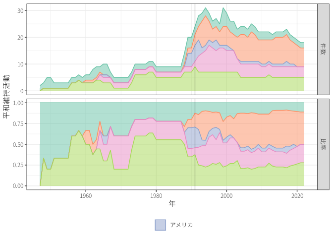

1.3.2 冷戦後：期待と失望
冷戦の終結\(\leadsto\)イデオロギー対立が解消\(\leadsto\)安保理の活性化
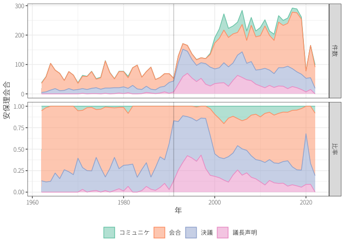
国連安保理決議678
The Security Council,
Recalling and reaffirming its resolutions 660 (1990) of 2 August 1990, 661 (1990) of 6 August 1990, 662 (1990) of 9 August 1990, 664 (1990) of 18 August 1990, 665 (1990) of 25 August 1990, 666 (1990) of 13 September 1990, 667 (1990) of 16 September 1990, 669 (1990) of 24 September 1990, 670 (1990) of 25 September 1990, 674 (1990) of of 29 October 1990 and 677 (1990) of 28 November 1990.
Noting that, despite all efforts by the United Nations, Iraq refuses to comply with its obligation to implement resolution 660 (1990) and the above-mentioned subsequent relevant resolutions, in flagrant contempt of the Security Council,
Mindful of its duties and responsibilities under the Charter of the United Nations for the maintenance and preservation of international peace and security,
Determined to secure full compliance with its decisions,
Acting under Chapter VII of the Charter,
Demands that Iraq comply fully with resolution 660 (1990) and all subsequent relevant resolutions, and decides, while maintaining all its decisions, to allow Iraq one final opportunity, as a pause of goodwil, to do so;
Authorizes Member States co-operating with the Government of Kuwait, unless Iraq on or before 15 January 1991 fully implements, as set forth in paragraph 1 above, the above-mentioned resolutions, to use all necessary means to uphold and implement resolution 660 (1990) and all subsequent relevant resolutions and to restore international peace and security in the area;
Requests all States to provide appropriate support for the actions undertaken in pursuance of paragraph 2 of the present resolution;
Requests the States concerned to keep the Security Council regularly informed on the progress of actions undertaken pursuant to paragraphs 2 and 3 of the present resolution;
Decides to remain seized of the matter.
武力行使授権（容認）決議の特徴：
- 平和に対する脅威の認定
- 第7章（あるいは第42条）に基づく宣言
- 「すべての必要な措置を取る」ことの授権
2001年の9.11同時多発テロ：加盟国に共通の脅威と認知\(\leadsto\)安保理決議1368
- テロリズムに対しても自衛権を行使
- NATOは初めて集団的自衛権を行使\(\leadsto\)アフガニスタンへ侵攻
2003年のイラク戦争：はアメリカやイギリスが明確な武力行使授権決議なしに攻撃
- 中国やロシアだけでなくフランスやドイツも反対
2014年のロシアによるクリミア侵攻、2022年のウクライナ侵攻：安保理は機能不全
\(\leadsto\)安保理が対応できるのは、常任理事国間で利害が対立しない程度に重要ではなく、行動しようと思う程度には重要な事態
2 軍縮・不拡散
軍縮 (disarmament) ：特定の兵器の量を削減すること
不拡散 (non-ploliferation) ：特定の兵器の新たな開発、保有を阻止すること
\(\leadsto\)なぜ軍縮と不拡散を目指すのか？
- 軍事支出を削減することで経済成長や社会福祉に支出することができる。
- 相手国がより軍縮をすることによって、軍事バランスが自国に有利になる。
\(\leadsto\)なぜ軍縮と不拡散は実現しないのか？
2.1 制度の役割
2.1.1 安全保障のジレンマ
軍縮と不拡散は安全保障のジレンマの構造
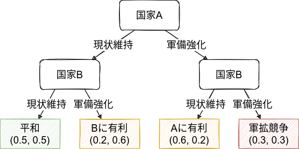
- シナリオ1は囚人のジレンマ、シナリオ2は鹿狩りゲーム
\(\leadsto\)相互に軍縮することが望ましくても、それが実現しない。
- 「軍縮をする」という相手の約束を信じることができない。
2.1.2 トリガー戦略
\(\leadsto\)約束を破ったときには報復する（軍備拡大をする）という脅しによって、協調を引き出すことができる（場合がある）。
- 「現状維持をするが、相手が軍拡をした場合はこちらも軍拡をする」というトリガー戦略
- 将来の価値は割り引かれる (discounted)
- 今日もらえる1万円と1年後にもらえる1万円のどっちが嬉しいか？
- 将来の価値は割引因子\(0 < \delta < 1\)がかけられる（とする）。
- 割引因子が大きい＝将来を重視している
\[ \begin{split} &\textrm{常に互いに軍縮するときの利益} \\ &= 0.5 + \delta \times 0.5 + \delta^2 \times 0.5 \cdots \\ &\textrm{最初には自分だけ軍拡をして、その後は互いに軍拡するときの利益} \\ &= 0.6 + \delta \times 0.3 + \delta^2 \times 0.3 \cdots \end{split} \]
- 裏切って軍拡をすることでその時は大きな利益を得られる。
- その後は報復されて互いに軍拡競争に陥って利益を得られない。
\(\leadsto\)長期的関係があり将来の利益を重視する＝割引因子が大きい\(\leadsto\)将来の軍拡競争の不利益よりも平和の利益を重視\(\leadsto\)軍拡しない。
\[ \begin{split} 0.5 &< 0.6 \\ \delta \times 0.5 &> \delta \times 0.3 \\ \delta^2 \times 0.5 &> \delta^2 \times 0.3 \\ \vdots &> \vdots \end{split} \]
一般的に、長期的関＆将来の利益を重視\(\leadsto\)協調が可能
どのような時にトリガー戦略による協調が実現するのか？
- 報復されるという将来の出来事の認識（将来の影）
- 他の分野でも報復されるというイシュー・リンケージ
- 軍備に関する明確なルール・軍拡をしていないという透明性（情報の非対称性の解決）
2.1.3 軍縮に関する制度
国連総会第1委員会：軍縮と不拡散全般について国家間の議論が行われている。
しかし、実質的な議論はジュネーブ軍縮会議で行われてきた。
\(\leadsto\)コンセンサス方式ということもあり現在は実質的に進展はしていない。
国連事務局には軍縮部がある。
大量破壊兵器 (weapons of mass destruction: WMD) ：
- 核兵器 (nuclear weapon)
- 生物兵器 (biological weapon)
- 化学兵器 (chemical weapon)
大量破壊兵器はその被害の大きさ、非人道性から軍縮と不拡散の最重要ターゲットになっている。
2.2 核不拡散
2.2.1 NPT
1968年に核兵器の不拡散に関する条約 (Treaty on the Non-Proliferation of Nuclear Weapons : NPT) が署名され、1970年に発効
非核兵器国による核兵器の開発や管理を禁止している。
核兵器不拡散条約 第1条
締約国である各核兵器国は、核兵器その他の核爆発装置又はその管理をいかなる者に対しても直接又は間接に移譲しないこと及び核兵器その他の核爆発装置の製造若しくはその他の方法による取得又は核兵器その他の核爆発装置の管理の取得につきいかなる非核兵器国に対しても何ら援助、奨励又は勧誘を行わないことを約束する。
核兵器不拡散条約 第2条
締約国である各非核兵器国は、核兵器その他の核爆発装置又はその管理をいかなる者からも直接又は間接に受領しないこと、核兵器その他の核爆発装置を製造せず又はその他の方法によつて取得しないこと及び核兵器その他の核爆発装置の製造についていかなる援助をも求めず又は受けないことを約束する。
- 核兵器国：1967年時点で核兵器の開発に成功していたアメリカ、イギリス、フランス、ソビエト連邦、中国の5ヶ国
- インドとパキスタン
- NPTに加盟せず、核兵器の開発に成功
- イスラエル
- NPTに加盟せず、核兵器の開発や保有について明言をしていないが、事実上の核保有国
- 北朝鮮
- 2003年にNPTを脱退し、核兵器の開発
他にも核兵器の開発を行っていた国やその疑惑のある国もいる。
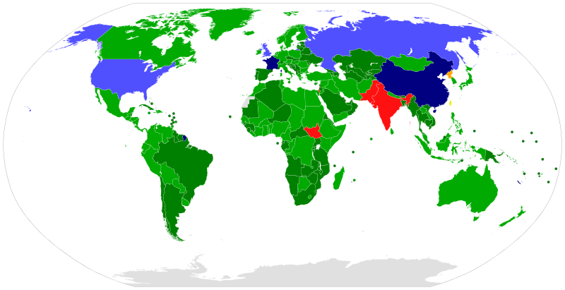
5年ごとにNPT再検討会議が開催
核兵器不拡散条約 第8条3項
前文の目的の実現及びこの条約の規定の遵守を確保するようにこの条約の運用を検討するため、この条約の効力発生の五年後にスイスのジュネーヴで締約国の会議を開催する。その後五年ごとに、締約国の過半数が寄託国政府に提案する場合には、条約の運用を検討するという同様の目的をもつて、更に会議を開催する。
2.2.2 IAEA
特定の国にのみ核保有を認める点で不公平／非核兵器保有国にも原子力の平和利用の権利
核兵器不拡散条約 第3条1項
締約国である各非核兵器国は、原子力が平和的利用から核兵器その他の核爆発装置に転用されることを防止するため、この条約に基づいて負う義務の履行を確認することのみを目的として国際原子力機関憲章及び国際原子力機関の保障措置制度に従い国際原子力機関との間で交渉しかつ締結する協定に定められる保障措置を受諾することを約束する。……
原子力技術は軍事目的にも平和目的にも使用できるデュアルユースという性質を持つ。
- 国際原子力機関 (International Atomic Energy Agency: IAEA) がデュアルユースの問題に対応する。
NPTやIAEAは核開発に関して独自に制裁できる権限も能力もない。
国連安保理は直接的に軍縮に権限を持っているわけではない／核開発が「平和に対する脅威」であると認定されれば、経済制裁や軍事制裁を行うことが可能（第39, 41条）
- 北朝鮮に対して2006年に安保理決議1718が採択、2009年にも安保理決議1874が採択され、経済制裁
- イランに対しても2006年に安保理決議1737が、2010年には安保理決議1929が採択され、経済制裁
安保理決議には法的拘束力があり、日本も経済制裁
2.3 核軍縮
2.3.1 誠実交渉義務
NPTは核保有国に核軍縮に誠実に取り組むことを義務付けている。
核兵器不拡散条約 第6条
各締約国は、核軍備競争の早期の停止及び核軍備の縮小に関する効果的な措置につき、並びに厳重かつ効果的な国際管理の下における全面的かつ完全な軍備縮小に関する条約について、誠実に交渉を行うことを約束する。
\(\leadsto\)現在、存在する核兵器の大半はアメリカとロシアのものであるため、二国間（米ロ）で核軍縮交渉
- 1972年に戦略攻撃兵器制限暫定協定 (SALT I)が締結（SALT IIは未発効）
- 1987年にヨーロッパにおける中距離核戦力全廃条約が締結（2019年にアメリカが破棄）
- 1991年には戦略兵器削減条約 (START I) が発効（START IIは未発効）
- 2011年に新STARTが発効し、2021年に5年延長に合意
イギリス、フランス、中国による核兵器の生産については制限がない。
核兵器の弾頭数の制限であって、核兵器の性能向上についても制限はない。
核兵器用核分裂性物質生産禁止条約（カットオフ条約）：核兵器に必要な高濃度ウランやプルトニウムの生産を禁止する条約\(\leadsto\)交渉中断
2.3.2 核実験の禁止
1963年にアメリカ、イギリス、ソビエト連邦は部分的核実験禁止条約 (Partial Test Ban Treaty: PTBT) を締結し、地下以外での核実験
- フランスと中国は核開発での劣位を固定するものとして反対

地下実験も禁止する包括的核実験禁止条約 (Comprehensive Nuclear Test Ban Treaty: CTBT) が軍縮会議で交渉されたが頓挫し、1996年にオーストラリアが国連総会に提案をして採択
- アメリカや中国などが批准せず、未発効
- ただし、包括的核実験禁止条約機関準備委員会 (CTBTO) は設置されており、情報収集などをしている。

2.3.3 非核兵器地帯
非核兵器地帯 (nuclear weapon free zone) ：核兵器の使用や配備を条約で定めた地域
核兵器不拡散条約 第7条
の条約のいかなる規定も、国の集団がそれらの国の領域に全く核兵器の存在しないことを確保するため地域的な条約を締結する権利に対し、影響を及ぼすものではない。

2.3.4 近年の動き
オバマ大統領は2009年にプラハ演説を行い、ノーベル平和賞を受賞
- 安保理サミットで安保理決議1887を採択
- テロリストによる核兵器や放射性物質の悪用を防ぐための核セキュリティサミットを開催
1990年代に核兵器禁止条約が提案され、2010年代に総会第1委員会で交渉が要請
核兵器禁止条約 第1条
- 締約国は，いかなる場合にも，次のことを行わないことを約束する。
- 核兵器その他の核爆発装置を開発し，実験し，生産し，製造し，その他の方法によっ て取得し，占有し，又は貯蔵すること。
- （省略）
- （省略）
- 核兵器その他の核爆発装置を使用し，又はこれを使用するとの威嚇を行うこと。
- …
2017年に国連本部で核兵器禁止条約交渉会議が開かれ採択、2021年に発効
- 核兵器廃絶国際キャンペーン (ICAN) がノーベル平和賞を受賞
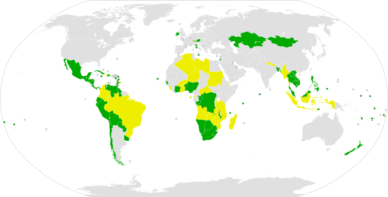
2.4 通常兵器
2.4.1 国際人道法
国際人道法 (international humanitarian law) や武力紛争法：戦争において国家が守るべきルール
- ジュネーブ諸条約第一追加議定書：軍事目標主義、文民の保護
ジュネーブ諸条約第一追加議定書 第48条
紛争当事者は、文民たる住民及び民用物を尊重し及び保護することを確保するため、文民たる住民と戦闘員とを、また、民用物と軍事目標とを常に区別し、及び軍事目標のみを軍事行動の対象とする。
\(\leadsto\)ダムや原子力発電所への攻撃、無差別爆撃などは違法
- ハーグ陸戦条約：不必要な苦痛の禁止
ハーグ陸戦条約 第23条
In addition to the prohibitions provided by special Conventions, it is especially forbidden -
…
To employ arms, projectiles, or material calculated to cause unnecessary suffering;
…
\(\leadsto\)核兵器の使用は国際人道法に反するかもしれない（核兵器使用に関するICJ勧告的意見における個別意見）
人道の観点から通常兵器（大量破壊兵器以外の兵器）の規制も主張されている。
2.4.2 地雷・クラスター弾
他にも対人地雷やクラスター爆弾の禁止条約なども締結
対人地雷やクラスター爆弾（不発弾）は土に埋もれて撤去が困難
- 市民（特に子供）が知らずに踏んでしまって、死亡あるいは脚を失ってしまう。
基本的に多国間軍縮交渉は軍縮会議で行われてきたので、大国の反対で議論が進まないことが多い。
\(\leadsto\)NGOが対人地雷禁止の運動を始め、各国がそれに賛同する。
1996年にオタワで対人地雷禁止条約を採択

オタワ・プロセスを参考にする形でNGO主導のクラスター弾に関する条約についても2007年に採択

- 日本は2015年にクラスター爆弾の破棄を完了
2.4.3 輸出管理
通常兵器の貿易の管理、不正な取引の防止を定めた武器取引条約が2014年に発効
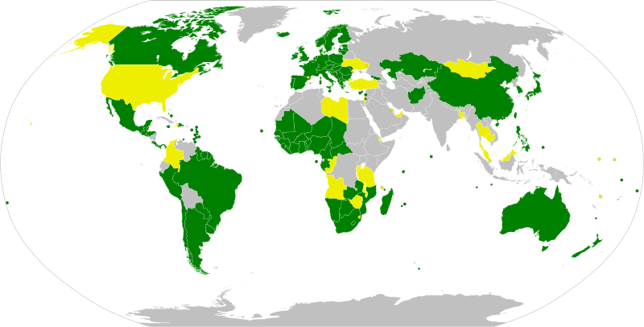
軍事利用可能な物質や技術の流出を防ぐ輸出管理レジームが各種存在
- 軍事目的と民生目的の製品を明確に区別することができない（デュアル・ユース）ため、輸出管理が困難
- 安全保障貿易情報センター (CISTEC)
\(\leadsto\)経済と安全保障の二分法がゆらぎ、相互に連関するようになってきている？
3 制度から共同体？
3.1 信頼醸成
非軍事的な安全保障に関する制度として信頼醸成措置 (Confidence Building Measures: CBM)
- 軍事情報の共有や演習の視察、ホットラインの設置\(\leadsto\)誤認の可能性を減らす。
1954年に欧州安全保障協力会議 (Conference on Security and Co-operation in Europe: CSCE) が設立され、東西陣営の交渉の場となった。
- 1975年にはヘルシンキ最終文書 (Helsinki Final Act) が採択され、安全保障だけでなく経済や人権についても協力することに合意
1995年には欧州安全保障協力機構 (Organization for Security and Co-operation in Europe: OSCE) へと発展的解消

3.2 資源の共同管理
石炭や鉄鋼の管理がヨーロッパにおける戦争の一因であったという認識\(\leadsto\)国際的な共同管理を目指す。
- 欧州石炭鉄鋼共同体 (European Coal and Steel Community: ECSC) が設立
- ドイツのルール地方は石炭と鉄鋼の重要な産地
- ドイツの軍事力の源泉であり、1923年には賠償金支払いが滞る\(\leadsto\)フランスとベルギーが占領\(\leadsto\)欧州安定の障害
- フランス：ドイツの石炭鉄鋼を利用して復興＆ドイツの台頭を封じ込め
- アメリカ：ドイツに厳しい国際管理となることで、ドイツが社会主義化するのではないかと懸念

\(\leadsto\)資源の国際的管理による平和の促進？
東シナ海におけるガス田の開発について、日本と中国で境界線の主張が異なっている。
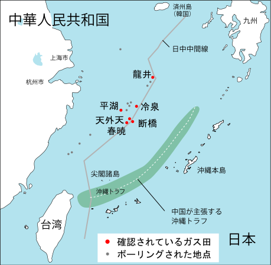
2008年に「東シナ海における日中間の協力について」というプレス発表で、日中間の共同開発に合意
\(\leadsto\)中国による単独開発が露見し、共同開発は実施されず
- 領土については分割することができないが、資源をどのように管理するかという点では交渉の余地がある。
- しかし、合意内容を強制させることはできない点でコミットメント問題
- 他にもイシュー・リンケージや補償 (compensation/side payment) によって合意？
3.3 機能主義
産業革命による技術の進歩国境\(\leadsto\)越えた人間の経済・社会活動を可能
\(\leadsto\)政治的・軍事的問題だけが国境を超える時代は終わり、経済的・社会的問題も国際問題に
- 蒸気船の発明により河川航行の需要が拡大\(\leadsto\)世界初の政府間機関であるとされるライン川航行中央委員会（1815年）が設立

- 現在の国連の専門機関の中で最古のものとしては万国電信連合（1865年、現在の国際電気通信連合）が、次に古いものとして万国郵便連合（1874年）
\(\leadsto\)国際問題の解決の手段として国際機関が「発明」\(\leadsto\)後の国際連盟や国際連合へ
軍事・安全保障をハイ・ポリティクス、それ以外の社会経済をロー・ポリティクスと呼ぶ
- 現実には、経済安全保障のようにこれらを区別できる？
機能主義 (functionalism)：ロー・ポリティクスな分野では政治的対立が小さい\(\leadsto\)行政的なサービスを提供することで国際協調が促進
国際連盟や国際連合は主として国際の平和と安全の維持を目的としているが、様々な専門機関を設置している。
- 国際労働機関：労働者の労働条件などを改善する。
- 政府・労働者・使用者の三者が参加する点で特徴的
- 世界保健機関：国際公衆衛生の指揮などを行う。
- 前身となる国際連盟保健機関に日本は国際連盟脱退後も参加
特定の（協調が容易な）分野に特化することで、国際協調
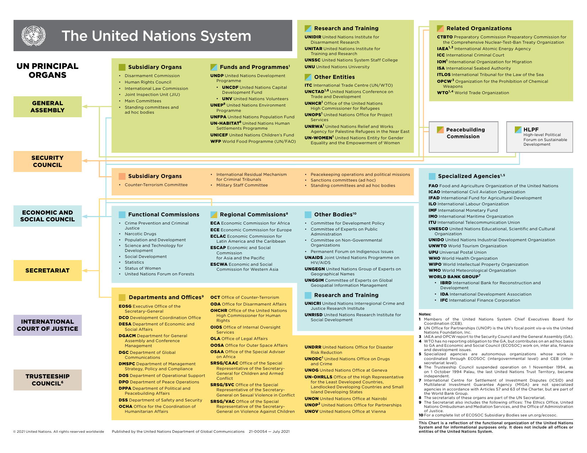
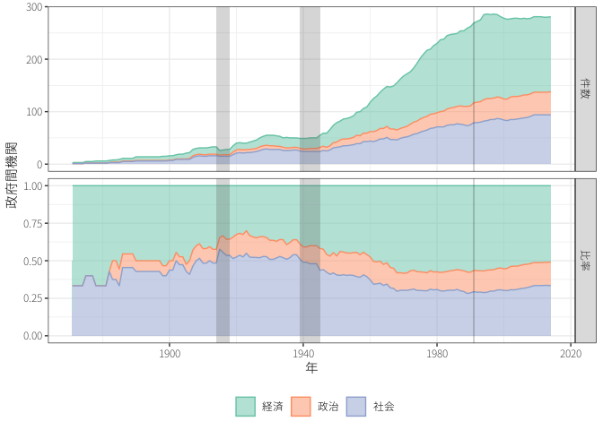
3.3.1 新機能主義
新機能主義：非政治的な分野での協調は波及\(\leadsto\)次第に政治的な分野でも協調\(\leadsto\)最終的には主権を超国家 (supranational) 機関に移譲する
- ECSCの後、設立された欧州経済共同体と欧州原子力共同体とともに欧州共同体（さらに欧州連合）へ発展


{kind=link}
{kind=link}
{kind=link}
{kind=link}
{kind=link}
{kind=link}
{kind=link}
{kind=link}
{kind=link}
{kind=link}
{kind=link}
{kind=link}
{kind=link}
{kind=link}
{kind=link}
{kind=link}
機能主義の前提：政治的な問題と非政治的な問題を区別できる？
- 1974年（前年の第4次中東戦争をきっかけに）UNESCOやILOでアラブ諸国によるイスラエル批難決議が採択
- 2011年にパレスチナの加盟を決定するとアメリカは分担金を停止、2018年に脱退
- 現在、台湾が世界保健機構に加盟を望んでいるが、中国は反対
新機能主義では安全保障の重要性が軽視されている。
- 欧州連合の3本柱は欧州共同体（経済・社会分野）、共通外交・安全保障政策、警察・刑事司法協力と言われているが、外交政策や軍隊の統合の見込みは少ない。
ナショナリズムや欧懐疑主義 (Euroscepticism) は統合を阻害する。
- EU市民が選出できる欧州議会の権限は限られ、多くの政策はブリュッセルのEU官僚によって決定されていることへの不満が募っている（民主主義の赤字）。
\(\leadsto\)超国家的な統合は（今のところ）ヨーロッパのみ
3.4 安全保障共同体
安全保障共同体 (security community)：武力行使の可能性を想定すらし得ない国家の集まり(Deutsch 2015)
\(\leadsto\)安全保障共同体は平和の原因なのか結果なのか？
- 国連総会の投票行動に基づいて推定された理想点 (ideal point) (Bailey, Strezhnev, と Voeten 2017)を見ると、ある種の分断？
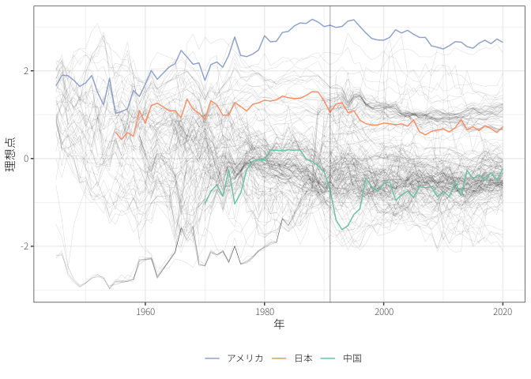
4 国際社会における制度
軍事力の限界\(\leadsto\)制度・ルールの構築による平和
- アナーキーな国際社会における制度は（国内社会を理想とする限り）不完全
\(\leadsto\)無意味なものなのだろうか？
- 制裁による協調を引き出すためのデバイス
- 継続的な交流\(\leadsto\)将来の陰
- 遵守すべき明確なルール・監視制度\(\leadsto\)誤認の減少
\(\leadsto\)特に国際政治経済の分野において重要な役割
参考文献
Bailey, Michael A, Anton Strezhnev, と Erik Voeten. 2017. 「Estimating dynamic state preferences from United Nations voting data」. Journal of Conflict Resolution 61 (2): 430–56.
Deutsch, Karl Wolfgang. 2015. Political community and the North American area. Vol. 2305. Princeton University Press.
Ikenberry, G John. 2009. 「Liberal internationalism 3.0: America and the dilemmas of liberal world order」. Perspectives on politics 7 (1): 71–87.
———. 2018. 「The end of liberal international order?」 International Affairs 94 (1): 7–23.
Oneal, John R, と Bruce M Russet. 1997. 「The classical liberals were right: Democracy, interdependence, and conflict, 1950–1985」. International studies quarterly 41 (2): 267–93.
Oneal, John R, と Bruce Russett. 1999. 「The Kantian peace: The pacific benefits of democracy, interdependence, and international organizations, 1885–1992」. World politics 52 (1): 1–37.
山影進. 2012. 国際関係論講義. 東京大学出版会.